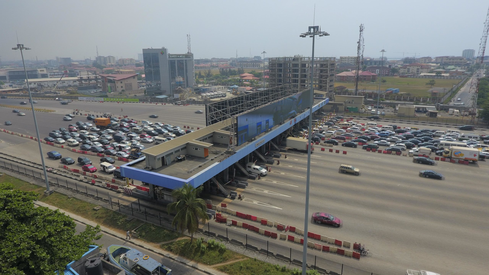

Lekki Conservation Center

The Centre was established in 1990 to serve as biodiversity conservation icon and
environment education centre. The facility was built by the Chevron Corporation
for the Nigerian Conservation Foundation (NCF), as a reserved sanctuary for the
rich flora and fauna of the Lekki Peninsula. The company has since provided annual
funding for the management of the Centre.
To start the conservation project, three potential areas were surveyed in 1987
by NCF technical team in partnership with the defunct Lagos State Ministry of
Agriculture and Cooperative. Thereafter, Lekki area was chosen to establish the
demonstration site for the conservation project. Locating the conservation project
on Lekki Peninsula informed the name of the project - Lekki Conservation Centre.
The Centre was established by the Nigerian Conservation Foundation to protect the
wildlife and mangrove forests of Nigeria's South-West coastline from the threat
of urban development.
Lekki-Ikoyi Link Bridge
The Lekki-Ikoyi Link Bridge, is a 1.36 km (0.84 mile) cable-stayed bridge in Lagos
State. It links the Phase 1 area of Lekki, with Ikoyi district of Lagos. The bridge
was commissioned on 29 May 2013 by the Governor of Lagos State, Babatunde Raji Fashola.
The Lagos State government, on the other hand, has argued that the collection of
tolls is not only required to maintain the bridge but also to generate funds for
building other bridges to link parts of Lagos. The waterway above which the bridge
is built is owned and controlled by the Federal Government of Nigeria.
Apart from vehicular traffic, the bridge also serves as a recreational facility.
Fitness inclined residents of Lekki phase 1 and Ikoyi use the wide curbs of the
bridge for jogging and running, usually in the early mornings and evenings.
Tourists and other visitors also find this bridge as one of the places to visit
and the bridge is the most photographed place in Lagos. The founder of Facebook,
Mark Zuckerberg went on a morning run on the Lekki-Ikoyi Link Bridge on his visit to Lagos.
Lekki Toll Gate
On the night of 20 October 2020, at about 6:50 p.m., members of the Nigerian Army opened
fire on unarmed End SARS protesters at the Lekki toll gate in Lagos State, Nigeria.
Amnesty International stated that at least 12 protesters were killed during the shooting.
A day after the incident, on 21 October, the governor of Lagos State, Babajide Sanwo-olu,
initially denied reports of any loss of lives, but later admitted in an interview with a
CNN journalist that "only two persons were killed".
The Nigerian Army initially denied involvement in the shooting, but later stated
that it had deployed soldiers to the toll gate on the orders of the governor of Lagos State.
A month after the shooting, following a CNN documentary on the shooting, the Nigerian Army
admitted to the Lagos Judiciary panel of inquiry into the shooting that it had deployed its
personnel to the toll gate with both live and blank bullets.
Ajah Market

Ajah caters to the needs of its residents by offering a plethora of shopping opportunities
as the city grows in popularity. The neighbourhood is littered with shops, markets, malls,
supermarkets, and stalls.
Along the Lekki-Epe expressway is the Ajah shopping mall. It's a two-story, U-shaped structure
with a variety of grocery, cosmetics, salon, and clothing stores.